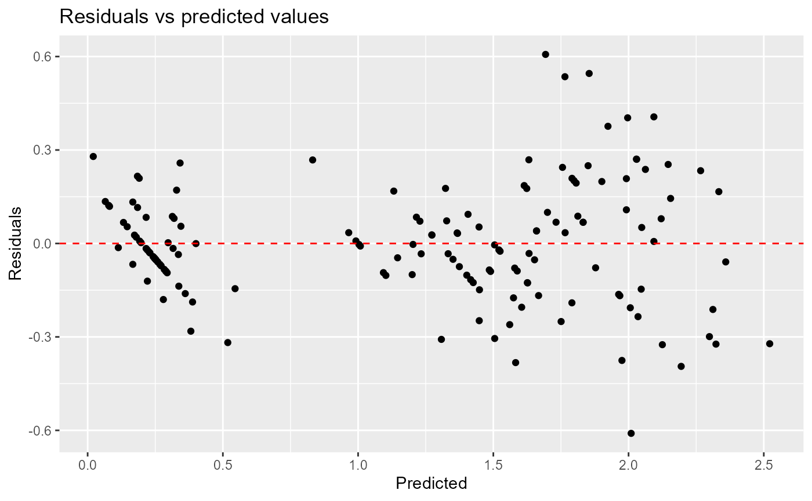

linregasm_documentation.RmdHere we will demonstrate how to use linregasm in a project to check linear regression assumptions:
library(linregasm)We will use the Iris dataset from the data package to demonstrate the functionality of lrasm.linregasm`.
data(iris)
head(iris)
#> Sepal.Length Sepal.Width Petal.Length Petal.Width Species
#> 1 5.1 3.5 1.4 0.2 setosa
#> 2 4.9 3.0 1.4 0.2 setosa
#> 3 4.7 3.2 1.3 0.2 setosa
#> 4 4.6 3.1 1.5 0.2 setosa
#> 5 5.0 3.6 1.4 0.2 setosa
#> 6 5.4 3.9 1.7 0.4 setosaIn our example, we want to investigate the linear relationship between the response Petal.width versus the predictors: Sepal.Length, Sepal.Width, and petal width. We start by defining the dataframe and a formula to relate the variables within a linear regression model:
formula = "Petal.Width ~ Sepal.Length + Sepal.Width + Petal.Length"
iris_df = irisWe can evaluate the homoscedasticity of our residuals by passing our data and formula into the function homoscedasticity(). Note that ‘homoscedasticity’ returns two objects, the first one is a plot of residuals vs predicted values, while the second is the p value of the correlation between residuals vs predicted values:
hsc_results <- linregasm::homoscedasticity(iris_df, formula)
#> [1] "The p value of the correlation between the predicted value and the residuals is: 1"
#> The p value of the correlation is above the rejection threshold, thus the correlation is likely not significant.
#> The data is likely to be homoscedastic if the cluster of points has similar width throughout the X axis on the residuals plot.
hsc_results
#> [[1]]
#>
#> [[2]]
#> [1] 1We can evaluate the normality of our residuals by passing our data and formula into the function normality(). Note that normality() returns two objects, the first one is a p-value from the Shapiro Wilk test, while the second is a string containing either the word Pass or Fail depending on the results of the test. The function will also print a summary statement.
norm_results <- normality(iris_df, formula)
#> [1] "After applying the Shapiro Wilks test for normality of the residuals the regression assumption of normality has passed and you can continue with your analysis"
norm_results
#> [[1]]
#> [1] 0.0877058
#>
#> [[2]]
#> [1] "Pass"After applying the Shapiro Wilks test for normality of the residuals, the regression assumption of normality has passed.
We can evaluate the multicollinearity assumption of our data set by passing our data, formula, and the threshold for the VIF value. multicollinearity() takes these arguments and returns a data frame with VIF scores for each feature along with the statement advising the user if the multicollinearity assumption is violated.
mult_results <- linregasm::multicollinearity(iris_df, formula)
#> Warning: package 'car' was built under R version 4.1.2
#> Loading required package: carData
#>
#> Attaching package: 'dplyr'
#> The following object is masked from 'package:car':
#>
#> recode
#> The following objects are masked from 'package:stats':
#>
#> filter, lag
#> The following objects are masked from 'package:base':
#>
#> intersect, setdiff, setequal, union
mult_results
#> # A tibble: 3 x 1
#> VIF
#> <dbl>
#> 1 6.26
#> 2 1.84
#> 3 7.56In this case, since all of our VIF scores were below the threshold of 10, we can conclude that our data satisfies the multicollinearity assumption.